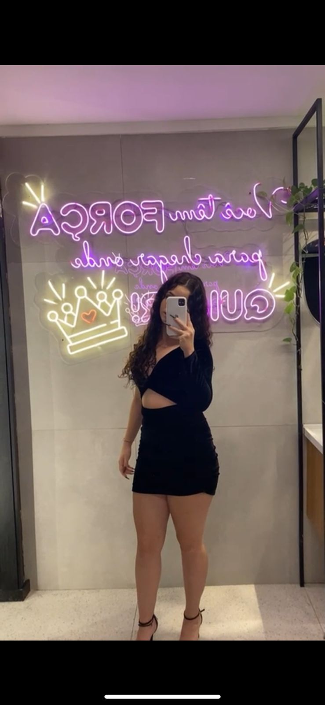

Olá, meu nome é Julia, mas gosto de ser chamada de Juh.
Estou no ensino médio no colégio Ruben e cursando o 2º grau técnico em Administração.
Tenho 16 anos. Nos dias vagos, faço academia.
Pretendo trabalhar como veterinária e, no ano que vem, vou tentar entrar na UFRGS.
Tenho bastante expectativa em relação a isso.
Me inspiro muito na minha mãe, que é uma pessoa dedicada e batalhadora.
Sempre me incentivou a seguir meus sonhos e a me esforçar nos estudos.
A determinação dela é uma grande motivação para mim.
Ela e minha avó me ensinaram a levar as coisas de uma forma mais leve
e sempre tentar ajudar as pessoas .

Projeto e conhecimentos
Bem, faço T.I. no colégio São Lucas.
No começo, foi bem complicado, pois nunca tive contato com a programação.
Achei bem difícil mexer com o NetBeans, já que o código tem que ser exatamente correto.
Já trabalhei com vetores, Java, NetBeans, teste de mesa, strings, laços "for" e "while",
métodos, tabela verdade, PowerShell e "switch-case" , entre outras coisas.
Com o tempo, fui me acostumando e comecei a gostar mais da programação.